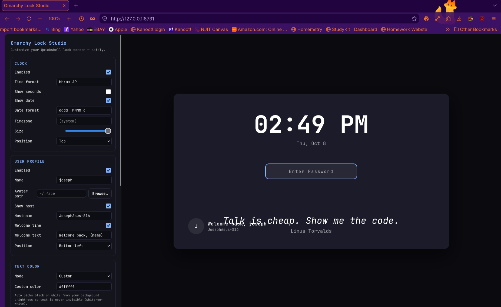

omarchy-lock-studio
Python web app (127.0.0.1:8731) to customize the Omarchy lock screen: clock, profile + welcome line, dev quotes, MPRIS media, background picker with auto-upscale, theme text color, backup/restore. Generates LockView.qml preserving PAM auth.
Python · QML · HTML/CSS/JS · Linux